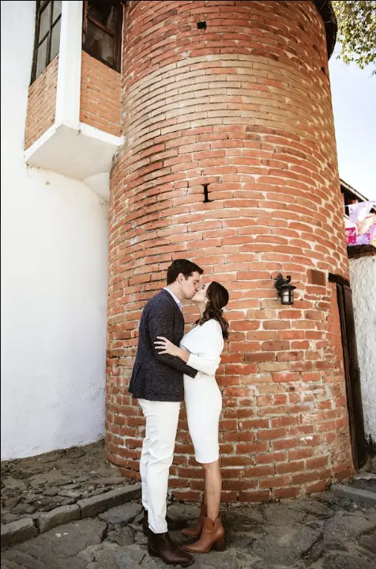

La cobertura adecuada no se decide únicamente por el tamaño de la boda. Depende de los momentos que quieren conservar, las distancias entre locaciones y el punto de la recepción hasta el que desean que fotografía y video permanezcan.
En Snapshot trabajamos normalmente con coberturas de 7 a 10 horas. Ese rango permite construir un reportaje completo, pero cada hora adicional debe responder a una necesidad real del programa.
Antes de compararDefine qué momentos son indispensables
Empiecen por ordenar el día en bloques: preparativos, ceremonia, sesión de pareja, retratos familiares, recepción y fiesta. Después anoten la hora prevista y la ubicación de cada uno.
El reloj de cobertura incluye el trabajo continuo del equipo. Si existen traslados, esperas o cambios de locación, ese tiempo también forma parte de la jornada. Por eso conviene revisar el programa antes de elegir un número de horas.
Cobertura de 7 horasUna jornada concentrada y con pocos traslados
Siete horas pueden funcionar cuando la ceremonia y la recepción están en el mismo lugar o muy cerca, los preparativos serán breves y no es necesario documentar una parte extensa de la fiesta.
Ejemplo orientativo
- 30–45 minutos de preparativos.
- Ceremonia.
- Retratos familiares y sesión de pareja.
- Entrada a la recepción, brindis y momentos principales.
- Inicio de la fiesta.
Esta opción requiere puntualidad y un programa claro. Si habrá ceremonia religiosa en otra localidad, múltiples preparativos o una sesión larga, siete horas pueden resultar ajustadas.
Cobertura de 8 horasEquilibrio para documentar el desarrollo completo
Ocho horas ofrecen mayor margen para comenzar con los preparativos, cubrir la ceremonia sin prisas y llegar a los momentos centrales de la recepción. Suele ser una buena base cuando las distancias son moderadas.
Ejemplo orientativo
- Preparativos de una o ambas personas.
- Ceremonia y salida.
- Sesión de pareja y fotografías familiares.
- Entrada, comida o cena, brindis y baile.
- Primer bloque de fiesta.
La diferencia frente a siete horas no consiste solamente en obtener más fotografías. Esa hora puede reducir la presión en las transiciones y permitir que los momentos sucedan con naturalidad.

Cobertura de 9 horasMás margen para locaciones y momentos familiares
Nueve horas son útiles cuando los preparativos ocurren en lugares diferentes, hay traslado hacia la ceremonia o la pareja quiere conservar una parte más amplia de la recepción.
También permiten dedicar tiempo a fotografías con familia y personas importantes sin sacrificar la sesión de pareja. En bodas con programas extensos, esa flexibilidad suele ser más valiosa que añadir actividades apresuradamente.
Cobertura de 10 horasUna historia amplia desde los preparativos hasta la fiesta
Diez horas se recomiendan cuando desean documentar con mayor amplitud los preparativos de ambas personas, hay distancias importantes o el programa incluye varios momentos antes y después de la ceremonia.
Esta cobertura puede llegar más adelante en la fiesta, pero no significa necesariamente permanecer hasta el final del evento. Conviene identificar qué sucede después del baile, cuándo aparecen las personas importantes y qué momentos aportarán algo distinto al reportaje.
Factor decisivoLos traslados también consumen cobertura
Calculen el tiempo real entre cada punto y agreguen margen para estacionamiento, accesos, tráfico y coordinación. Un trayecto anunciado como corto puede alterar el programa si los proveedores o familiares salen en momentos distintos.
Cuando sea posible, agrupen preparativos o elijan espacios cercanos. Si no lo es, prioricen qué parte de cada preparación quieren documentar y confirmen cómo se distribuirá el equipo.
Trabajo coordinadoFotografía y video deben compartir el mismo programa
Ambas áreas necesitan anticipar la ceremonia, ubicarse sin interferirse y coordinar retratos y movimientos. Si las coberturas tienen horarios diferentes, definan exactamente quién comienza primero y qué sucederá cuando uno de los servicios termine.
Contratar un equipo coordinado facilita la planeación, pero el horario debe seguir detallándose. Fotografía y video cuentan la misma jornada con lenguajes distintos y necesitan tiempo suficiente para hacerlo.
Decisión finalCómo calcular las horas que realmente necesitan
- Anoten la hora y ubicación de cada bloque del día.
- Marquen los momentos indispensables y los opcionales.
- Sumen traslados y márgenes razonables.
- Decidan cuánto desean conservar de los preparativos.
- Identifiquen el último momento importante de la recepción.
- Compartan el programa con el fotógrafo antes de reservar.
No es necesario contratar más horas por precaución si el programa puede organizarse mejor. Tampoco conviene elegir la cobertura más corta si obliga a eliminar momentos importantes o trabajar con tiempos imposibles.
Si todavía están comparando propuestas, consulten también nuestra guía sobre cómo elegir fotógrafo de bodas y revisen las historias completas para observar cómo se construye una cobertura real.